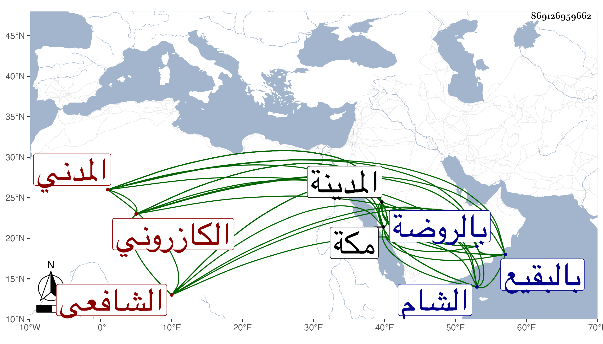

0902Sakhawi.DawLamic.ITO20230111-ara1.EIS1600.869126959662
Biography ID: 869126959662
93
محمد بن عبد العزيز بن عبد السلام بن محمد بن روزبة بن محمود بن إبراهيم ابن أحمد الشمس وربما لقب المحب ويكنى أبا عبد الله وأبا الفتح بن العز بن العز الكازروني المدني الشافعي . ولد في جمادى الأولى سنة خمسي وتسعين وسبعمائة بالمدينة ونشأ بها فحفظ القرآن والعمدة والتنبيه والحاوي والمنهاج الأصلي وألفية ابن ملك ، وعرض على الزينين خلف المالكي والمراغي بل وسمع عليه وحضر مجلسه في الفقه وانتفع به وكذا عرض على أبي حامد المطري وسمع عليهما صحيح البخاري وعرض أيضا على أبي عبد الله الوانوغي وبحث عليه في الألفية والجمل للزجاجي والتقريب في النحو أيضا وفي التنقيح في الأصول للقرافي وحضر دروسه أيضا في التفسير وأخذ أيضا عن ابن عم أبيه الجمال محمد بن الصفي الكازروني الفقه وأصوله وقرأ عليه من كتب الحديث أشياء ووصفه بالفقيه العلامة العالم صدر المدرسين وقرأ النحو والصرف والمعاني والبيان وإعراب القرآن على النور علي بن محمد الزرندي وحضر في الفقه والحديث بمكة في سنة أربع عشرة عند الجمال بن ظهيرة وبالمدينة عند الزين عبد الرحمن القطان وبحث الحاوي والمنهاج الأصلي مع شرحه وألفية ابن ملك والتلخيص على النجم السكاكيني وأذن له في الإقراء والتدريس والإفتاء ووصفه بالعلامة ، وتلا على الزين بن عياش لأبي عمرو ثم لعاصم ثم لورش وأكمل الثالثة عند وجه النبي صلى الله عليه وسلم ثم لابن كثير ولقالون عن نافع ثم لابن عامر والكسائي ولحمزة وأكملها عند وجه النبي صلى الله عليه وسلم فكمل له بها ست ختمات ثم جمع للسبع من أول القرآن إلى والوالدات وأذن له وسمع عليه قصيدته غاية المطلوب وسمع بالمدينة على النور المحلى سبط الزبير والشمس محمد ابن محمد بن أحمد بن المحب سمع عليه الصحيحين حين جاور عندهم بالمدينة والشرف الشيرازي والجرهي والولي العراقي حين قدم للحج في سنة اثنتين وعشرين وابن الجزري ، ودخل الشام فأخذ عن التاج عبد الوهاب بن أحمد بن صالح الزهري والشهاب أحمد بن عبد الله بن بدر الغزي والجمال بن نشوان والشمس الكفيري والبرهان خطيب عذراء والنجم بن حجي وأبو بكر اللوبياني والشمس محمد بن أحمد بن إسمعيل الحسباني الشافعيين وعرض عليهم ، وبالقدس عن الشمس الهروي وقرأ عليه بعض مسلم وساق له إسناده فكان بينه وبين مسلم سبعة كلهم حسبما كتبته في ترجمة الهروي نيسابوريون والزين القباني وسمع عليه بعض صحيح مسلم ، وأجاز له في سنة إحدى وثمانمائة البلقيني والعراقي والهيثمي وابن الملقن والحلاوي والسويداوي والمجد إسمعيل الحنفي والنجم البالسي وغيرهم وحدث وأجاز للتقي بن فهد وابنيه وغيرهم . ومات في المحرم سنة تسع وأربعين بالمدينة وصلى عليه بالروضة ودفن بالبقيع وقد ترجمته في الوفيات والمدنيين رحمه الله .
